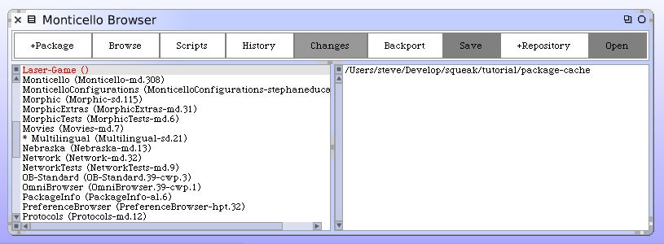
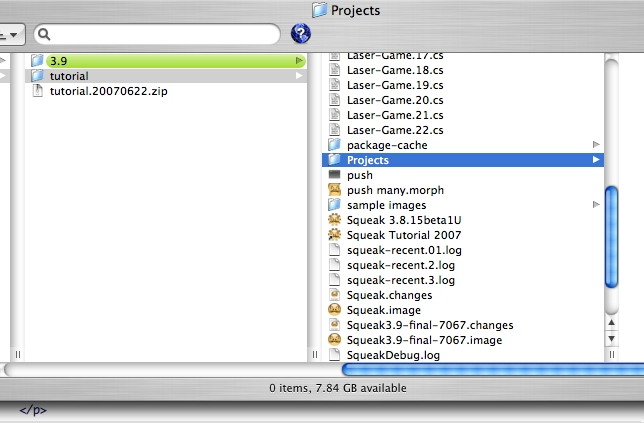
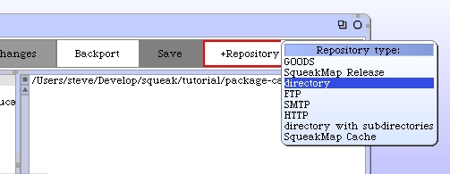
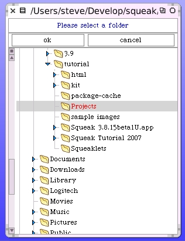
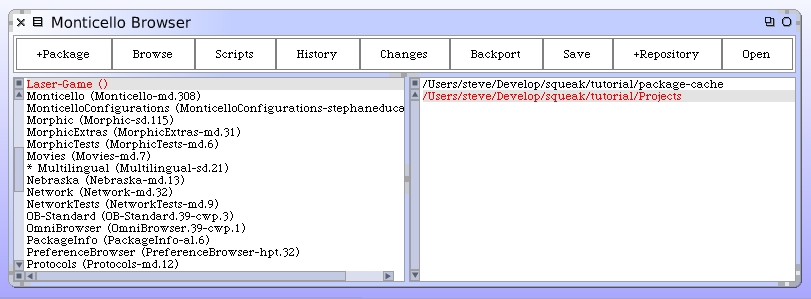
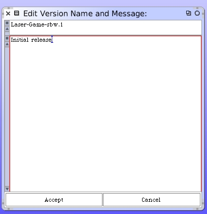
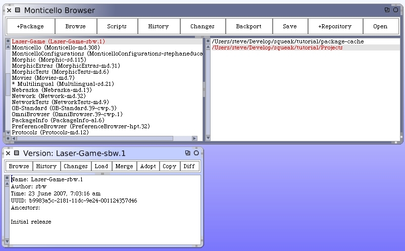

Close the Snapshot Browser. Let's go back an examine the Monticello browser. I resized it to be wider. We want to save our package definition in a repository. Since this is the first time we are doing this we will go through the steps of creating a repository as a folder on our hard drive. This folder will contain all versions of the Laser Game package we intend to save.
Before we add the definition of the new repository to Monticello we need to have the physical folder. I'll create a new folder called "Projects". In there I will save any Monticello project I create. It will be the repository folder.
Back inside Squeak we can click on the "+Repository" button. It will pop up a menu asking us to choose the type of repository. For this tutorial work I will choose "directory".
Squeak presents a dialog window for us to select the directory we intend to use for our repository.
After you complete this step you will see our new repository definition in the list of available repositories for our Laser Game package. The other repository in the list is the default one created for all Monticello packages. You may have noticed that there were quite a few interesting choices in the pop-up menu for repository type. I often use FTP when I want to publish my code to an FTP server and then share it with other developers working on the same projects.
With the repository selected, we should now click the "Save" button. Monticello pop open a window for us to edit version information about our package. By default it assigned the package-version name "Laser-Game-sbw.1". Monticello figured out my developer initials from Squeak and assigned the number "1" as the first version number.
You can also type a comment about the package before you press "Accept".
Monticello takes a snapshot of the code included in the package to be versioned and writes it to the repository. A confirmation window is presented. Also, you can see that our package now shows the current version number in the packages list.
You can close both of these windows. Later we will show how you can load or review a previously saved version of your package.
The basic LaserGame is complete and can be used within the Squeak environment. The following sections of this tutorial all add enhancements and features to this base we have just created.